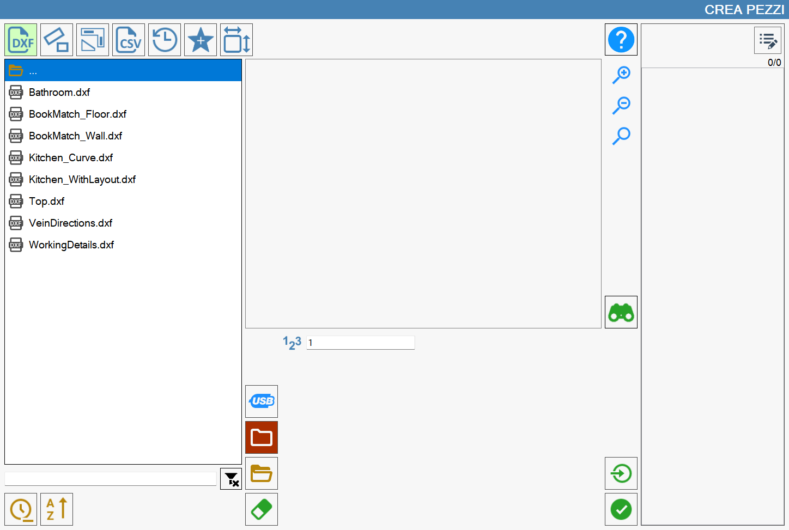
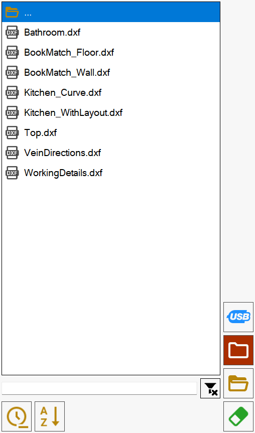
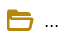
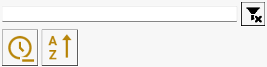
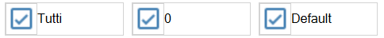

In questa sezione, è possibile creare pezzi tramite l’importazione di file DXF.

Lista dei file
Nella parte sinistra della finestra, è presente una lista che mostra tutte le cartelle e i file DXF contenuti nel percorso attualmente selezionato.

L’elemento in cima alla lista,

permette di tornare alla cartella superiore a quella in cui ci si trova correntemente.
Inizialmente, viene mostrata la lista dei file DXF presenti nella cartella di lavoro del PC. È possibile cambiare la cartella utilizzando gli appositi pulsanti che si trovano alla destra della lista dei file.
 | Memoria USB |
 | Cartella di lavoro |
 | Esplora cartelle |
 | Elimina file |
Ordinare e filtrare i file visualizzati
Gli elementi che si trovano al di sotto della lista gestiscono l’applicazione di filtri e l’ordinamento dei file che vengono visualizzati.

Nella parte superiore dell’immagine è collocata una barra di ricerca, tramite cui è possibile filtrare i file per nome, visualizzando unicamente quelli che contengono il testo inserito.
In questa sezione della schermata, si trovano anche i seguenti pulsanti:
Pulisci filtro | |
 | Ordinamento per data |
 | Ordinamento per nome |
La ricerca per nome si applica esclusivamente ai file contenuti nella cartella, e non ad eventuali sottocartelle presenti.
Al contrario, l’ordinamento per nome e per data, si applica ad ogni elemento della lista, pur mostrando le cartelle sempre prima dei file.
Anteprima
Alla selezione di un file, nel riquadro al centro della schermata, viene visualizzata un’anteprima del disegno, in modo da renderne immediata l’identificazione del contenuto.

È possibile interagire con l’anteprima sia trascinandone il contenuto, che usando i pulsanti posti alla sua destra.
Aumenta zoom | |
 | Diminuisci zoom |
Ripristina visualizzazione |
Pulsanti aggiuntivi
I seguenti pulsanti, consentono inoltre di svolgere delle azioni aggiuntive.
 | Importazione singola |
 | Pannello dettagli |
Pannello dettagli
Se un file è stato selezionato, è possibile accedere al “Pannello Dettagli“ per visualizzare le proprietà del DXF. Questo è possibile attraverso il seguente pulsante collocato alla destra dell’anteprima:
Una volta aperto, verrà visualizzato il seguente pannello, in aggiunta alla lista dei pezzi che compongono il DXF selezionato:

Gestione visibilità layout
Nella parte superiore di questo pannello sono riportati i layout sotto forma di checkbox attivabili o disattivabili a piacimento:

Il primo elemento di questa lista di layout permette di abilitare o disabilitare la visualizzazione di tutti i layout.
Pannello laterale
Pulsanti relativi a visibilità e padding
Oltre ai pulsanti già mostrati precedentemente relativi alla modifica che livello di zoom e al ripristino di questo sono presenti due nuovi pulsanti:

 | Evidenzia pezzo selezionato |
Muovi visuale |
Lista di polilinee
Sul lato centrale destro del pannello sono riportati i pezzi che compongono il DXF scelto, sotto forma di polilinee.
Selezionando uno sei valori presenti nella lista, verrà evidenziato con il colore giallo il relativo pezzo visibile nell’anteprima.

Quando viene premuto il tasto di fianco a ogni pezzo, verrà resa visibile la lista di polilinee che costituiscono il pezzo.
Sarà inoltre possibile evidenziare una singola polilinea del DXF semplicemente selezionando la rispettiva riga dalla lista:

Pulsanti inferiori
Questi pulsanti sono collocati nella parte inferiore della barra laterale.
 | Trova polilinea aperta precedente |
 | Trova polilinea aperta precedente |
Nel seguente esempio è stato aperto il Pannello Dettagli per un DXF che presenta alcuni pezzi costituiti da polilinee aperte, riportate in rosso nella lista: